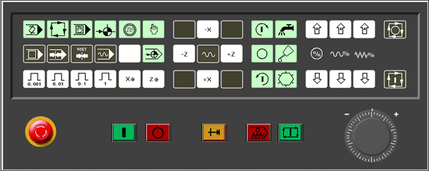
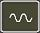
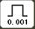
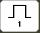
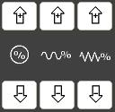

| GSK980T操作面板 |
机床操作面板位于窗口的右下侧，如下图所示。主要用于控制机床的运动和选择机床运行状态，
由模式选择旋钮、数控程序运行控制开关等多个部分组成，每一部分的详细说明如下。

模式选择开关
| EDIT: 用于直接通过操作面板输入数控程序和编辑程序。 | |
| AUTO：进入自动加工模式。 | |
| MDI：手动数据输入。 | |
| REF:回参考点。 | |
| HNDL:手摇脉冲方式。 | |
| JOG：手动方式，手动连续移动台面或者刀具。 | |
| 置光标于按钮上，点击鼠标左键，选择模式。 | |
数控程序运行控制开关
| 单程序段 | |
| 机床锁住 | |
| 辅助功能锁定 | |
| 空运行 | |
| 程序回零 | |
| 手轮X轴选择 | |
| 手轮Z轴选择 |
机床主轴手动控制开关
| 手动开机床主轴正转 | |
| 手动关机床主轴 | |
| 手动开机床主轴反转 |
辅助功能按钮
| 冷却液 | |
| 润滑液 | |
| 换刀具 |
手动移动机床台面按钮
 |
选择移动轴,正方向移动按钮,负方向移动按钮。  快速进给 |
手轮进给量控制旋钮


升降速按钮
 |
主轴升降速/快速进给升降速/进给升降速 |
程序运行控制开关
| 循环停止 | |
| 循环启动 | |
| MST选择停止 | |
系统控制开关
| NC启动 | |
| NC停止 |
紧急停止按钮
手轮